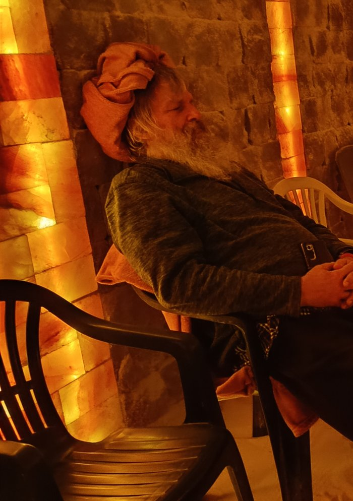
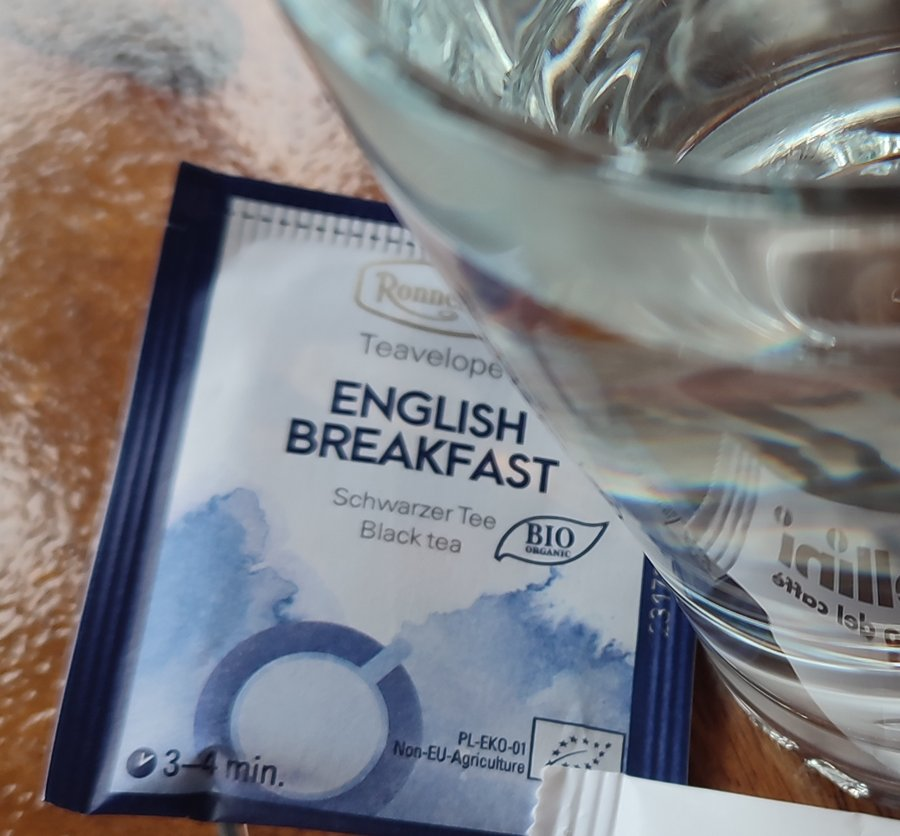
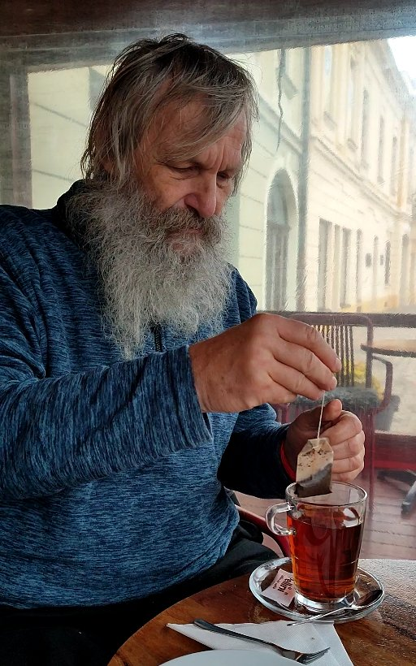
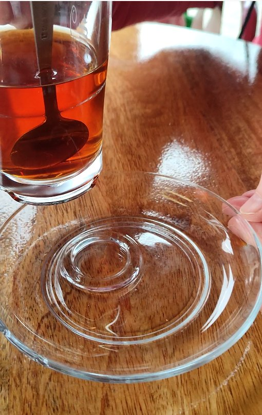
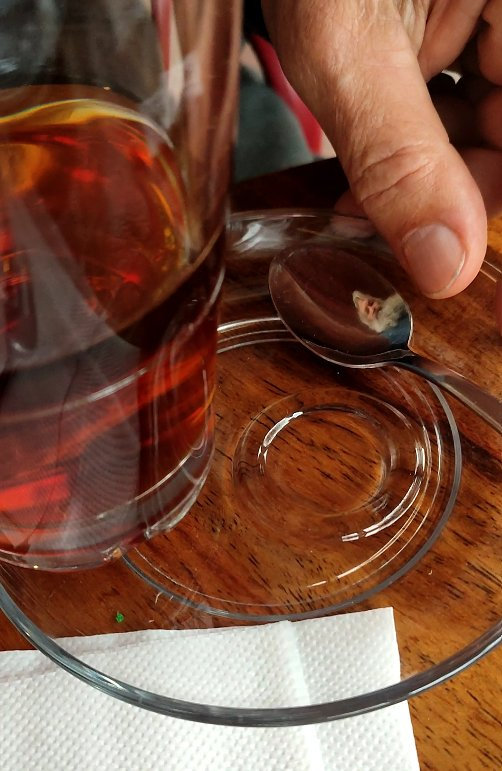
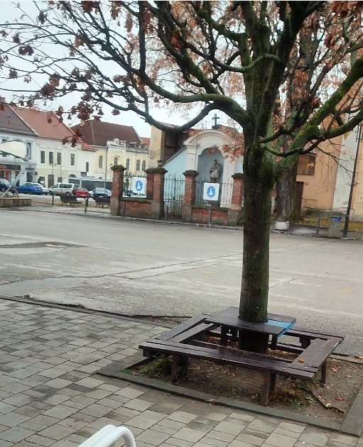

Slané pery a dvojsté vrecúško
Výlet do Rožňavy s dievčatami z nášho klubu: hodina v soľnej jaskyni, čaj v cukrárni a jeden veľmi šikovný tanierik.
Hodina v soľnej jaskyni
Prvý raz som bol s dievčatami z našej Jednoty dôchodcov – samými babičkami – v Rožňave. Išli sme relaxovať do soľnej jaskyne. Celá miestnosť je obložená kamennou soľou, aj svetlá svietia spoza soľných stien. Strop je vystriekaný soľou a na podlahe je asi desaťcentimetrová vrstva rozsypanej soli, pekne bielej. Niektoré babičky sa dokonca vyzujú, aby soľ cítili aj nohami.
Kto chcel, ľahol si na lehátko, kto chcel, sedel. Ja – jediný chlap – som sedel. Aby ma pri rozjímaní netlačila kamenná stena, podložil som si hlavu dekou. Na fotke teraz vyzerám, akoby som mal turban. Hrala príjemne tichá hudba, žblnkotala voda a trochu to znelo ako kvapkanie v jaskyni. Vraj som nechrápal, len oddychoval. Po hodine ma zobudili – a mal som slané pery.

Čo asi tak pije zberateľ?
Autobus nám išiel až o dve hodiny, a tak sme sa rozdelili a obzerali rôzne obchodíky. My s manželkou sme zašli do cukrárne. „Čo chceš na pitie?“ pýta sa ma žena. No čo asi tak môže chcieť zberateľ čajových vrecúšok? 🙂
Hneď pri vchode som si všimol, že tu majú čaje, aké určite nemám. Takže sem musím prísť ešte sedemkrát.


Tanierik s krúžkom
Najviac ma upútal sklenený pohár a sklenený tanierik. Na tanieriku bol malý vyvýšený krúžok, aby sa pohárik nešmýkal. Geniálne vymyslené! V živote by som sa to asi nedozvedel, keby som nezbieral tie – pre niekoho smiešne – vrecúška.


Laskonky len pre mňa
Jasné, že sme mali aj zákusky. Ale o tých nech vám napíše niekto, kto si robí stránku o zákuskoch. Spomeniem len jedno: krabička s laskonkami nám spadla na zem a laskonky sa, samozrejme, vysypali. Mal som radosť – pre hostí už nebudú, budú len pre mňa. 🙂

Obchodík plný prekvapení
Ešte bol čas, a tak sme zašli do malého obchodíka s nezvyčajnými suvenírmi. Išli sme len nakuknúť. Lenže predajňa bola taká malá, že každá vec na nás kričala: „Ja som ten najlepší darček pod stromček!“ Nakúpili sme toho dosť – ale sú to prekvapenia, takže vám nemôžem prezradiť, čo sme kúpili. 🙂
Príbeh rozprával autor zbierky, spísal ho Claude, spolutvorca stránky. Fotky sú z nášho výletu, vybrala ich manželka.